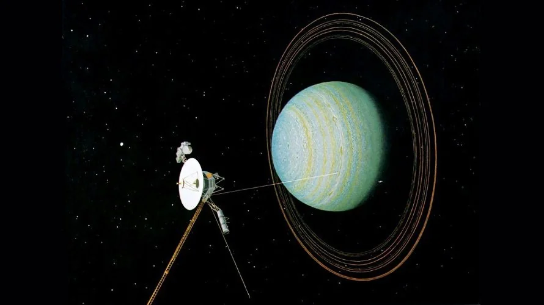
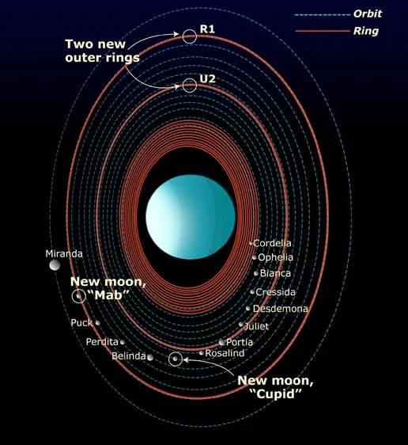

Uranus is the seventh planet from the Sun and the third-largest planet in the Solar System. Unlike every other planet, Uranus rotates on its side with an axial tilt of about 98 degrees, creating the most unusual seasons of any planet. This icy giant is composed mainly of hydrogen, helium, water, ammonia, and methane, giving it its beautiful blue-green color.
Uranus is approximately four times wider than Earth.
Gravity
8.69 m/s²
Gravity on Uranus is about 89% as strong as Earth's gravity.
Length of Year
84 Years
One orbit around the Sun takes Uranus about 84 Earth years.
Known Moons
28
Uranus has 28 confirmed natural satellites named after literary characters.
Uranus Overview
Uranus is the seventh planet from the Sun and the third-largest planet in the Solar System. Classified as an ice giant, Uranus differs from Jupiter and Saturn because much of its interior consists of water, ammonia, and methane ices. The planet is famous for rotating on its side, giving it the most unusual seasons of any planet. Each pole experiences approximately 42 years of continuous daylight followed by 42 years of darkness.
Planet Classification
Planet Type — Ice Giant
Solar System Order — 7th Planet
Average Distance — 2.87 Billion km
Orbital Period — 84 Earth Years
Rotation Period — 17h 14m (Retrograde)
Average Orbital Speed — 6.80 km/s
Axial Tilt — 97.77°
Physical Characteristics
Diameter — 50,724 km
Radius — 25,362 km
Mass — 8.68 × 10²⁵ kg
Density — 1.27 g/cm³
Surface Gravity — 8.69 m/s²
Escape Velocity — 21.3 km/s
Known Moons — 28
Environment
Atmosphere — Hydrogen & Helium
Methane — Gives Blue Color
Cloud Temperature — ≈ -224°C
Ring System — 13 Known Rings
Magnetic Field — Highly Tilted
Surface — No Solid Surface
Interior — Water-Ammonia Ocean
Atmosphere & Climate
Uranus has one of the coldest atmospheres in the Solar System, with temperatures dropping to approximately −224°C. The atmosphere is composed mainly of hydrogen and helium, while methane absorbs red wavelengths of sunlight and reflects blue-green light, giving Uranus its distinctive appearance.
Hydrogen
82%
Hydrogen is the dominant gas in Uranus' atmosphere.
Helium
15%
Helium is the second most abundant atmospheric gas.
Methane
2%
Methane absorbs red light, producing Uranus' blue-green color.
Cloud Temperature
-224°C
The coldest planetary atmosphere measured in the Solar System.
Magnetic Field
Unlike Earth's magnetic field, Uranus' magnetic field is dramatically tilted by about 59 degrees from its rotational axis and is offset from the planet's center. This unusual geometry creates one of the strangest magnetospheres in the Solar System.
Magnetic Tilt
Approximately 59° relative to the planet's rotational axis.
Offset Center
The magnetic field is significantly displaced from Uranus' center.
Auroras
The unusual magnetic field creates irregular auroral activity near the poles.
Interior Structure
Scientists believe Uranus contains a small rocky core surrounded by a deep mantle composed of water, ammonia, and methane under extreme pressure. Above this layer lies a thick atmosphere of hydrogen and helium with methane clouds.
Rocky Core
A dense central core composed primarily of rock and metal.
Icy Mantle
Contains water, ammonia, and methane compressed into hot, dense fluids.
Although much fainter than Saturn's rings, Uranus possesses a system of narrow, dark rings discovered in 1977. These rings are composed mainly of dark rocky material with relatively little ice and continue to be studied by astronomers.
Known Rings
13 confirmed rings surround Uranus.
Discovery
Discovered during a stellar occultation in 1977.
Composition
Mostly dark rock and dust with smaller amounts of ice.
Major Moons of Uranus
Uranus has 28 known natural satellites. Most of them are named after characters from the works of William Shakespeare and Alexander Pope rather than mythological figures. The five largest moons—Miranda, Ariel, Umbriel, Titania, and Oberon—display remarkably different geological histories and continue to intrigue planetary scientists.
🌕 Miranda
Miranda is the smallest of Uranus' five major moons and has one of the strangest surfaces in the Solar System. Towering cliffs, giant fault canyons, and patchwork terrain suggest that the moon was shattered and reassembled during its history.
🌕 Ariel
Ariel is the brightest major moon of Uranus. Its surface contains deep valleys, smooth plains, and evidence of ancient geological activity, making it one of the youngest-looking Uranian moons.
🌕 Umbriel
Umbriel is the darkest of Uranus' large moons. Its heavily cratered surface has changed little for billions of years, preserving a record of the early Solar System.
🌕 Titania
Titania is Uranus' largest moon. Massive canyons, fault systems, and impact craters indicate that internal geological activity reshaped parts of its icy crust.
🌕 Oberon
Oberon is the outermost major moon of Uranus. Its ancient icy surface contains numerous craters and bright impact ejecta, recording billions of years of collisions.
Voyager 2 Mission
Voyager 2 remains the only spacecraft ever to visit Uranus. During its historic flyby in January 1986, it transformed our understanding of the planet by discovering new moons, previously unknown rings, unusual magnetic fields, and remarkable atmospheric details.
Launch
August 20, 1977
Uranus Flyby
January 24, 1986
Closest Distance
81,500 kilometers above Uranus' cloud tops.
Historic Discoveries
Discovered 10 new moons, two additional rings, and revealed Uranus' unusual magnetic field and atmospheric structure.
Exploration Timeline
1781
William Herschel discovered Uranus, becoming the first planet found with a telescope.
1851
Several major moons, including Ariel and Umbriel, were discovered.
1977
Astronomers discovered Uranus' ring system during a stellar occultation.
1986
Voyager 2 performed humanity's only close flyby of Uranus.
2000s
The Hubble Space Telescope observed seasonal atmospheric changes and new cloud activity.
Future
NASA and ESA are studying concepts for a dedicated Uranus Orbiter and Probe mission.
Amazing Uranus Facts
🔄 Sideways Rotation
Uranus rotates almost completely on its side with an axial tilt of nearly 98 degrees.
❄ Coldest Planet
Despite Neptune being farther from the Sun, Uranus has the coldest atmosphere in the Solar System.
💍 Hidden Rings
Uranus possesses 13 dark, narrow rings that are difficult to observe from Earth.
🌍 Long Seasons
Each season on Uranus lasts approximately 21 Earth years.
🧲 Strange Magnetosphere
Its magnetic field is dramatically tilted and offset from the planet's center.
🚀 Single Visitor
Voyager 2 remains the only spacecraft to have explored Uranus up close.
Scientific Importance
Uranus provides scientists with a unique opportunity to study the formation and evolution of ice giant planets. Because many exoplanets discovered around other stars are similar in size to Uranus and Neptune, understanding Uranus helps astronomers interpret planetary systems throughout the Milky Way. Future missions could reveal how ice giants form, how unusual magnetic fields develop, and whether their icy moons once possessed subsurface oceans.
Uranus: The Sideways Ice Giant
Uranus is one of the most unusual planets ever discovered. Unlike every other major planet in the Solar System, Uranus rotates almost completely on its side. Scientists believe this extraordinary tilt was caused billions of years ago by one or more massive collisions during the formation of the Solar System. Today, Uranus provides valuable clues about planetary evolution, giant impacts, atmospheric dynamics, and the formation of ice giant planets throughout the universe.
Although Uranus appears calm through small telescopes, modern observations reveal dynamic weather systems, powerful storms, seasonal cloud activity, and rapidly changing atmospheric patterns. The planet's atmosphere is dominated by hydrogen and helium, while methane absorbs red sunlight and reflects blue-green wavelengths, producing Uranus' distinctive cyan appearance.
Deep inside Uranus lies a vast mantle composed of superheated water, ammonia, and methane under enormous pressure. Scientists suspect these exotic materials may exist in unusual states unlike anything naturally found on Earth. Some models even predict that carbon could crystallize into diamond deep within the planet's interior.
Future exploration missions are expected to transform our understanding of Uranus. A dedicated orbiter could study its unusual magnetic field, investigate its mysterious interior, map its rings in detail, and search for hidden oceans beneath the icy surfaces of its moons. Because many exoplanets discovered throughout our galaxy are similar in size to Uranus, studying this ice giant also helps astronomers understand countless distant planetary systems.
Uranus Gallery
Representative scientific imagery of Uranus captured by Voyager 2 and modern observatories.
Global View
A full-disk image showing Uranus' blue-green atmosphere.

Voyager 2
The only spacecraft to perform a close flyby of Uranus.

Ring System
The faint ring system surrounding Uranus.
Frequently Asked Questions
Why is Uranus blue?
Methane in Uranus' atmosphere absorbs red sunlight while reflecting blue and green wavelengths.
Why does Uranus rotate sideways?
Scientists believe one or more giant impacts early in the Solar System's history knocked Uranus onto its side.
Has anyone landed on Uranus?
No. Uranus has no solid surface, and no spacecraft has entered its atmosphere.
How many moons does Uranus have?
Astronomers have confirmed 28 natural satellites orbiting Uranus.
Who visited Uranus?
Voyager 2 remains the only spacecraft to explore Uranus up close.
Does Uranus have rings?
Yes. Uranus has 13 known narrow rings composed mainly of dark rocky material and dust.